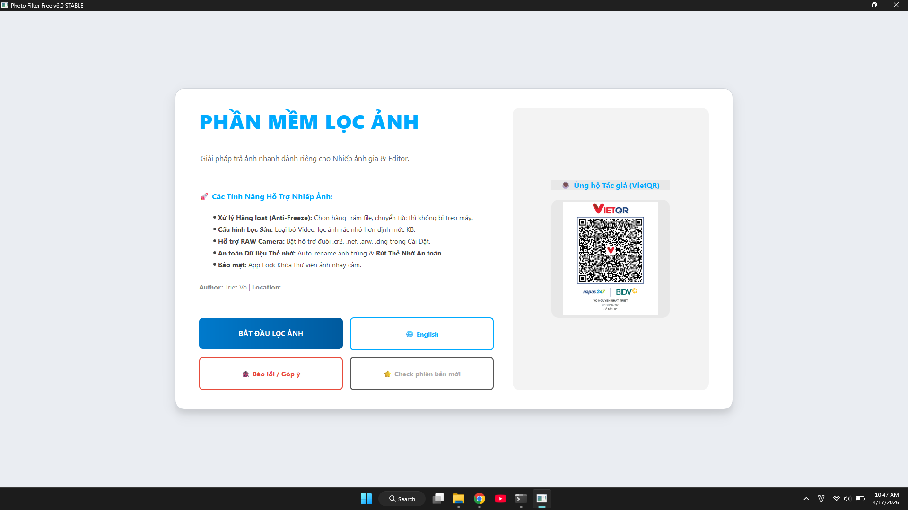

Phần mềm Portable phân loại hàng vạn ảnh từ máy ảnh vào máy tính cực nhanh. Tích hợp nạp ảnh tự động và đổi tên ảnh thẻ chuẩn Workflow Studio.
A portable tool to cull and sort thousands of photos instantly. Integrated with tethering auto-load and smart ID renaming for Studio Workflow.

Tự động giám sát thư mục. Máy ảnh chụp xong, file lập tức nạp lên phần mềm để kiểm tra ngay.
Auto folder monitoring. Photos are instantly loaded to the software right after you click the shutter.
Nhập tên khách hàng, khi nhấn Enter xuất file sẽ tự động đổi tên và đánh số thứ tự thông minh.
Enter client name, hit Enter to export, and files are automatically renamed and numbered.
Ngăn chặn triệt để việc xuất nhầm file 2 lần vào cùng thư mục. Tùy chọn tạo bản sao hoặc bỏ qua.
Prevent exporting the same file twice to a folder. Choose to skip or create a duplicate copy.
Khóa UI thông minh khi copy. Di chuyển 1000 ảnh cùng lúc mà không bị văng app.
Smart UI blocking during heavy transfers. Move 1000 photos with zero crashes.
Tự động từ chối load file Video để chống lag. Hỗ trợ mượt mà các file .cr2, .nef, .arw.
Automatically skip videos to prevent lag. Smoothly supports .cr2, .nef, .arw formats.
Phần mềm tự động kiểm tra, tải về và ghi đè file cập nhật từ GitHub mà không cần cài lại.
Automatically checks, downloads, and overwrites updates from GitHub without reinstalling.
Phần mềm Portable độc lập. Tải về ném thẳng vào thẻ nhớ hoặc màn hình Desktop là dùng luôn!
100% Portable software. Download and run it directly from your Desktop or SD card!
PhotoFilterFree.exeLưu ý: Hãy đối chiếu kỹ mã MD5 để tránh tải nhầm bản bị gắn mã độc. Tác giả không chịu trách nhiệm cho các tệp tin bị bên thứ 3 chỉnh sửa!
Note: Please double-check the MD5 hash to avoid malware infections. The author is not responsible for any modifications made by third parties!